01 · Brief
Multiple product teams had spent years on what was supposed to be one product. Each had drifted into its own visual language. We built one design system to pull them together under a single developer console. It took about six months, in 2022 and 2023.
02 · Outcome
The design system was adopted across 3 product teams. It was also the foundation for 4 white-label credential applications. Design-to-dev handover went from weeks to days.
03 · What I did
What I did.
As Lead Product Designer, I was the link between the Berlin and Singapore teams. I had worked on most of these products at some point. I could see exactly where the experiences had fragmented.
I led the team in designing and building the design system’s components, using atomic design. I managed the handover to the developers building out the system. I also owned the final product: the developer console that brought everything together.
04 · Key decisions
Key decisions.
Atomic design from the start
We had 4 products and hundreds of misaligned components. Starting at the atom level meant any future product could compose from the same building blocks instead of duplicating them. It also gave us a shared vocabulary across the Berlin and Singapore teams.
Multiple products with one system underneath White-label as the proof of concept
To me, the test of a design system is whether it can adapt without forking. So we duplicated ours and swapped the style guide. We used the copy to build new branded applications in a fraction of the original time. The architecture held up.
05 · The system
Building a design system for Affinidi's privacy-preserving applications.
A design system gives every team the same reusable components and guidelines. That way all platforms and products look and feel consistent. It also makes products faster to build and easier to scale.
Design and development get simpler, with less duplicate work and fewer errors. Teams also find it easier to work together.
With a design system in place, organisations can try new ideas sooner and ship what users need and expect.
06 · Atomic design
Atomic design.
For our design system we used atomic design, a method with five stages that work together. It lets you build an interface design system in a more deliberate, hierarchical way. The stages are atoms, molecules, organisms, templates and pages.
Style guide
The style guide below was the foundation of our design system. Most elements were already defined, and we added more as we needed them.
01 / 05
Atoms
Atoms are the most basic components, the building blocks of a design system. They include buttons, lines, shapes, icons, text fields, text labels and so on. Here are some of the atoms we used.
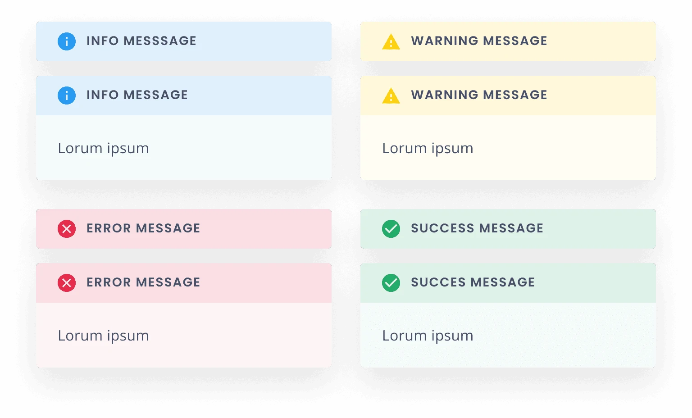
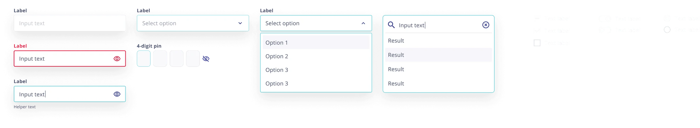
02 / 05
Molecules
Molecules combine two or more atoms. An input field and a button, for instance, can combine into a search form. Below are some of the molecules from our design system.
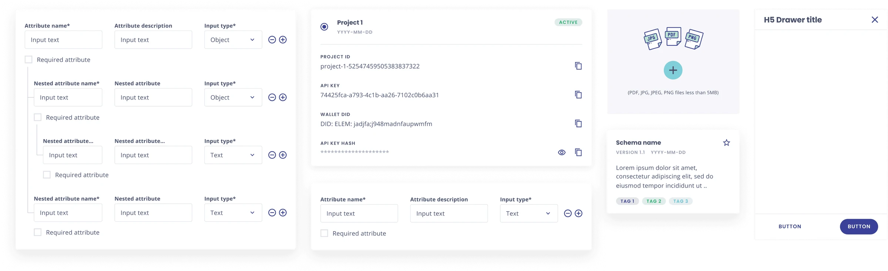
03 / 05
Organisms
Several molecules together form an organism, like a header, sidebar or signup form.
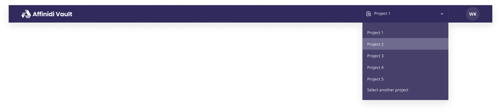
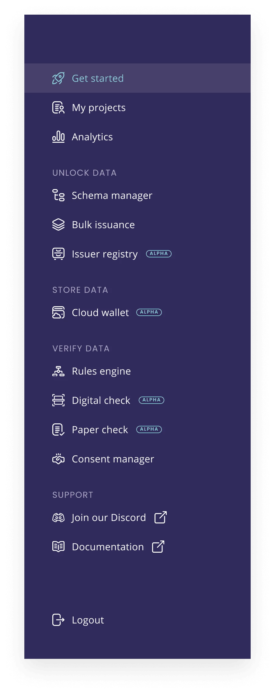
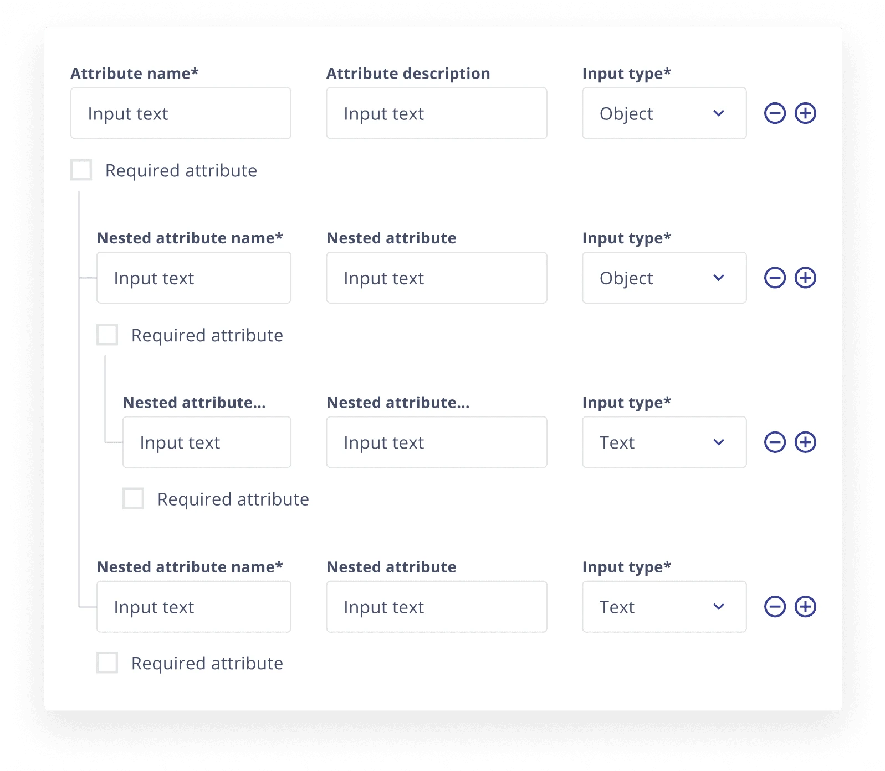
04 / 05
Templates
Templates are the glue that combines organisms or individual sections into a complete design.
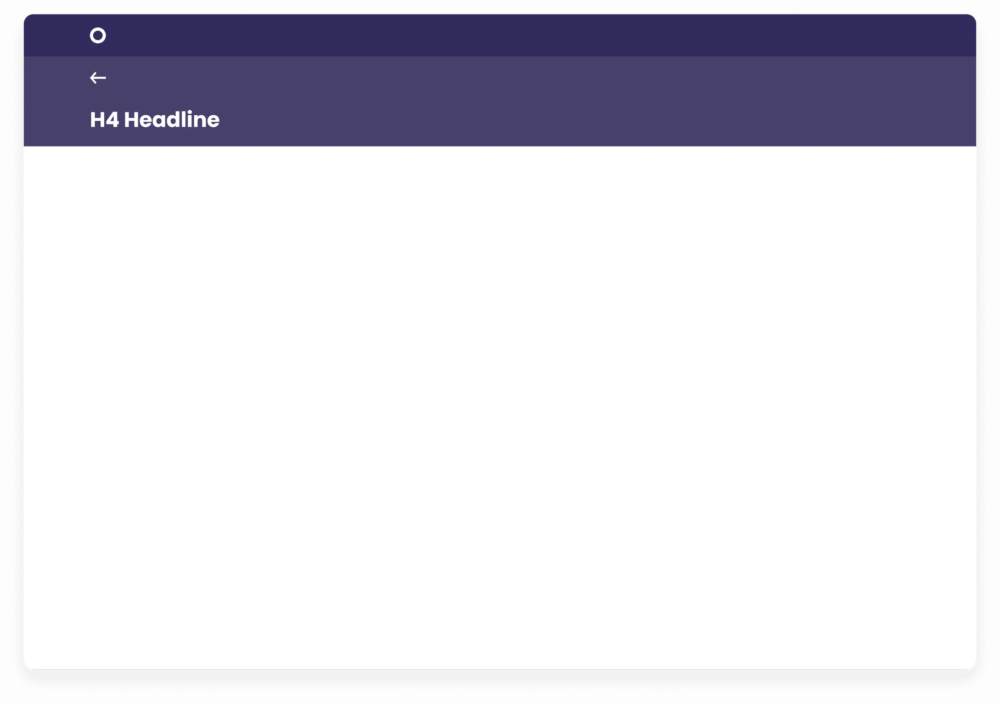
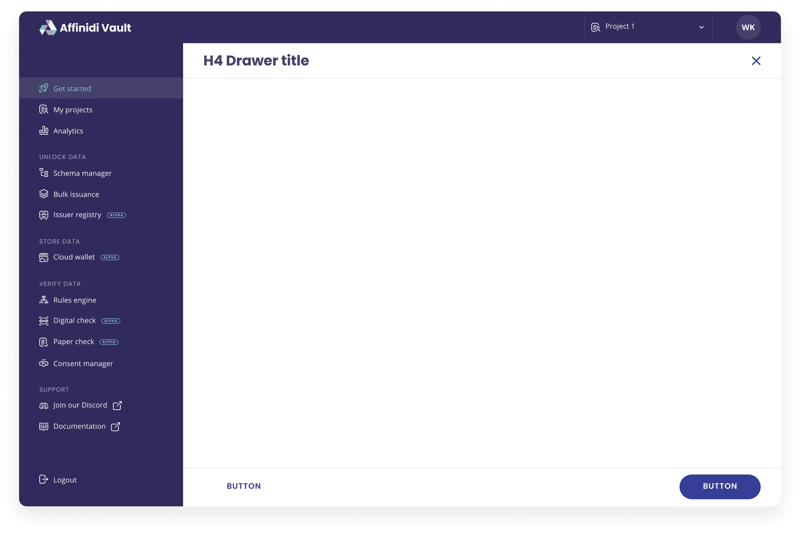
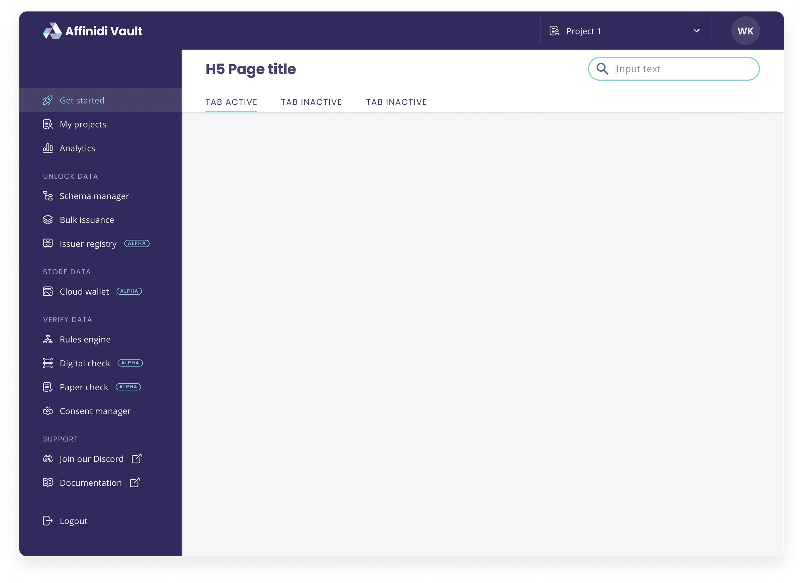
05 / 05
Pages
The highest level in an atomic design system is the actual pages that make up a product. Below is a selection of the pages of our developer console.
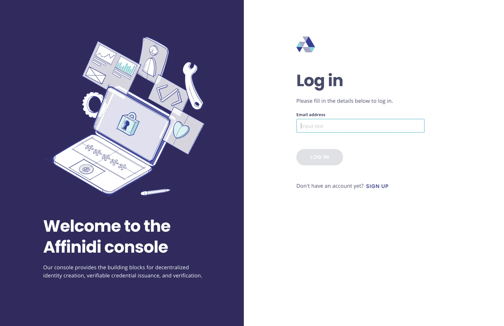
01 / 06 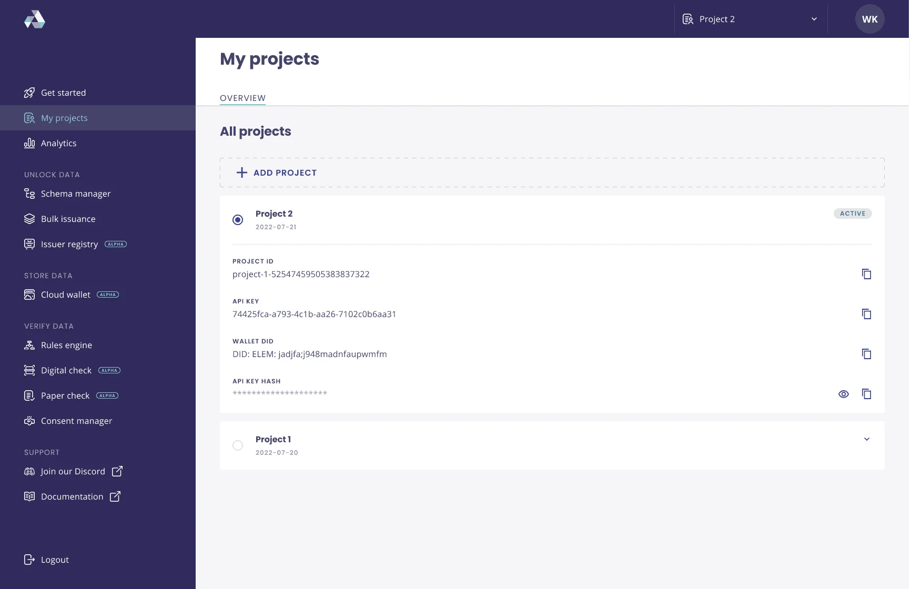
02 / 06 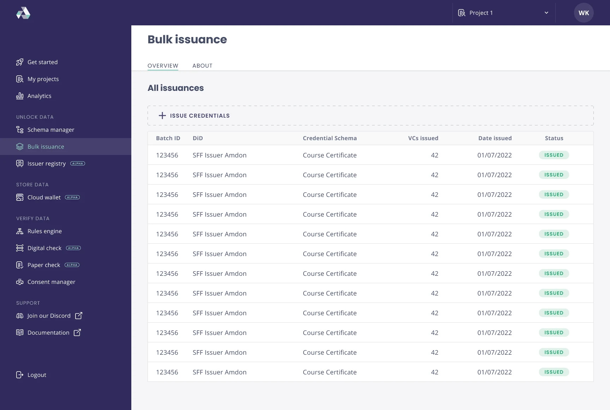
03 / 06 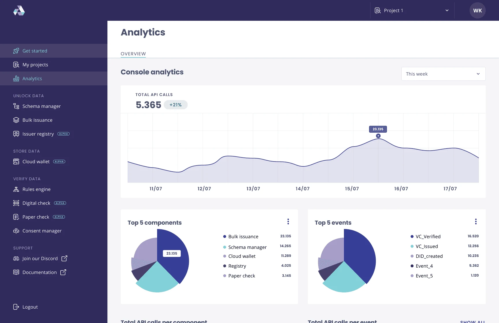
04 / 06 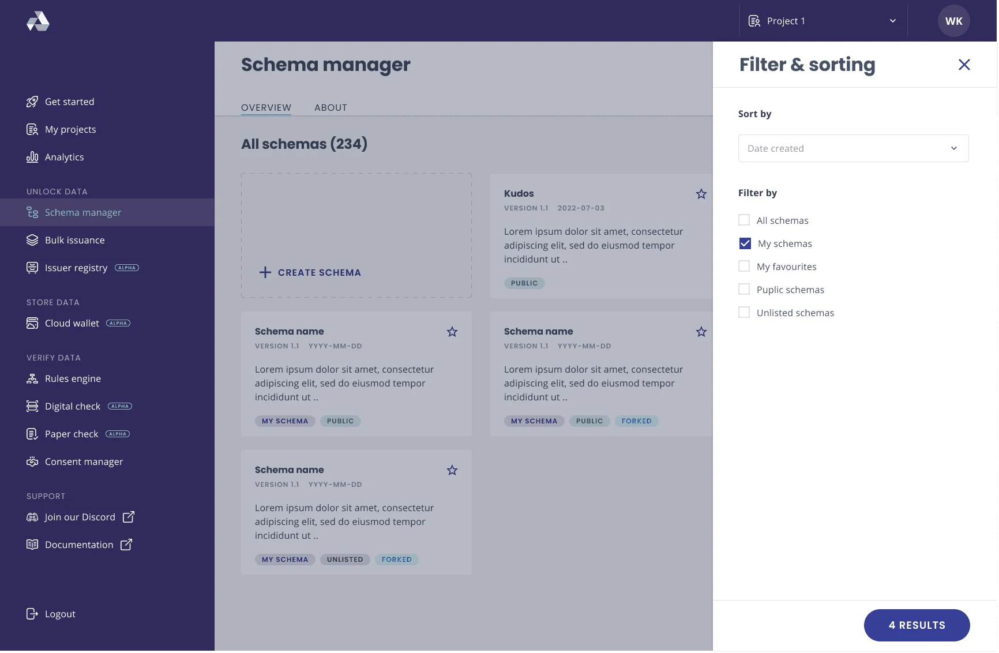
05 / 06 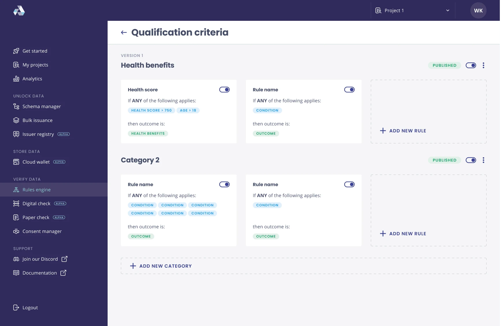
06 / 06
07 · Final designs
Final designs.
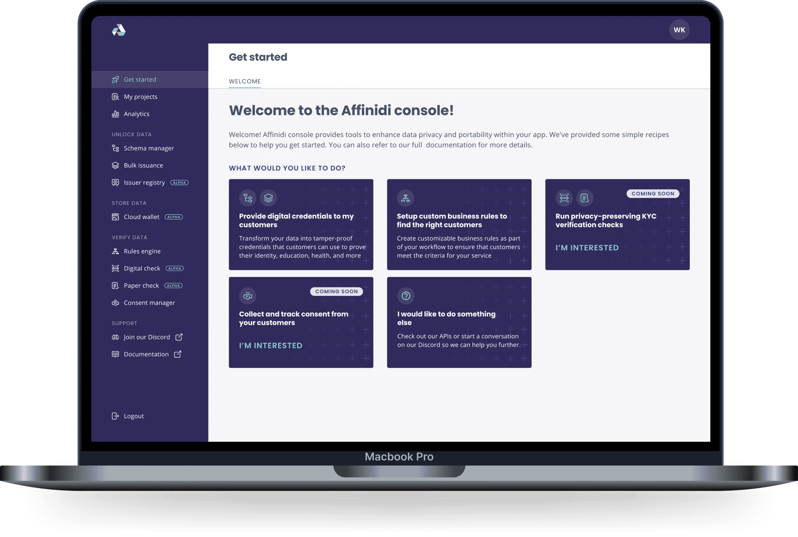
Developer console
We first built the design system for the developer console. The console gives Affinidi’s customers tools to improve data privacy and portability in their own apps. The primary application built on the design system